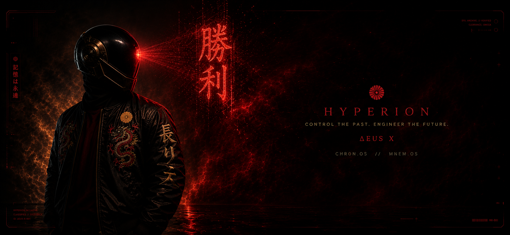
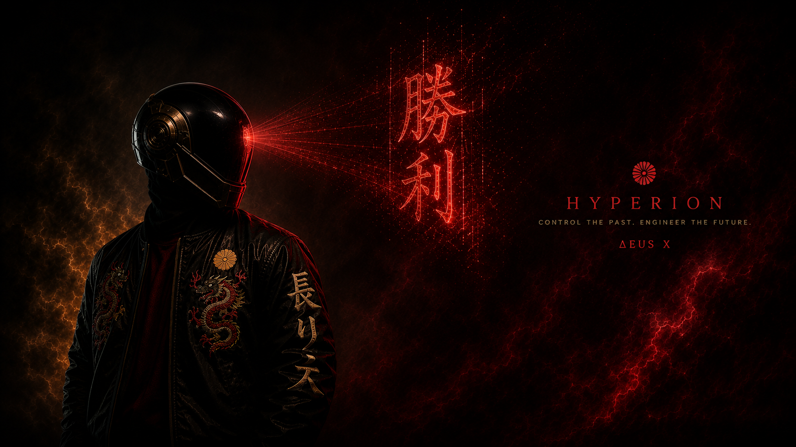
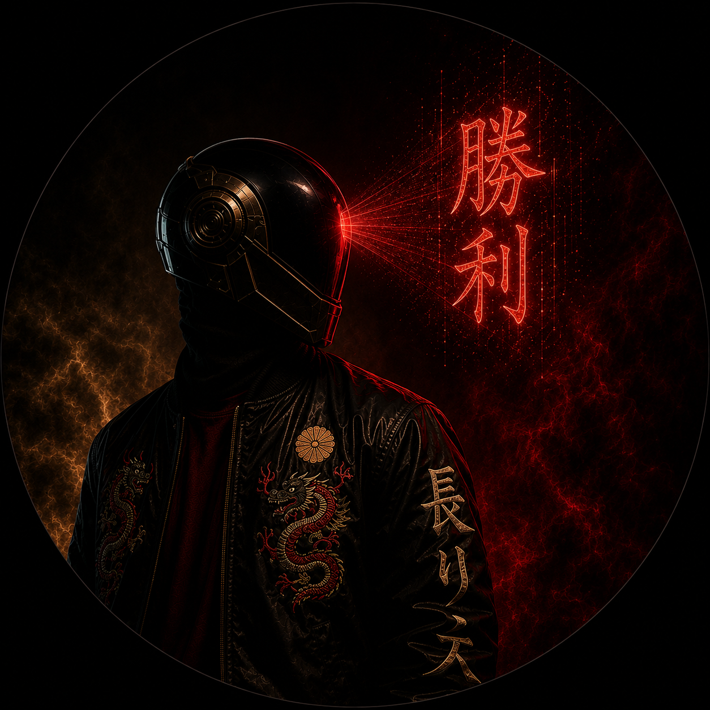
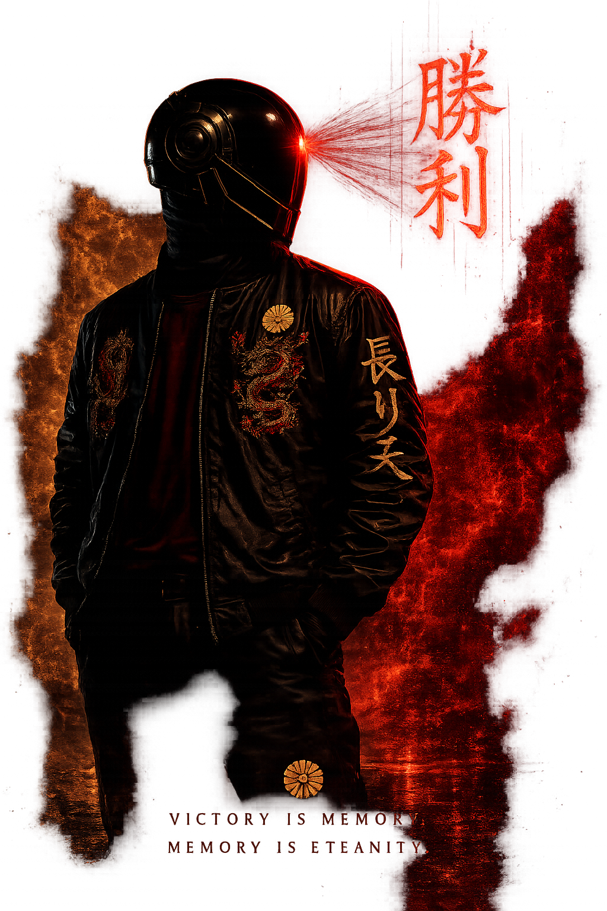
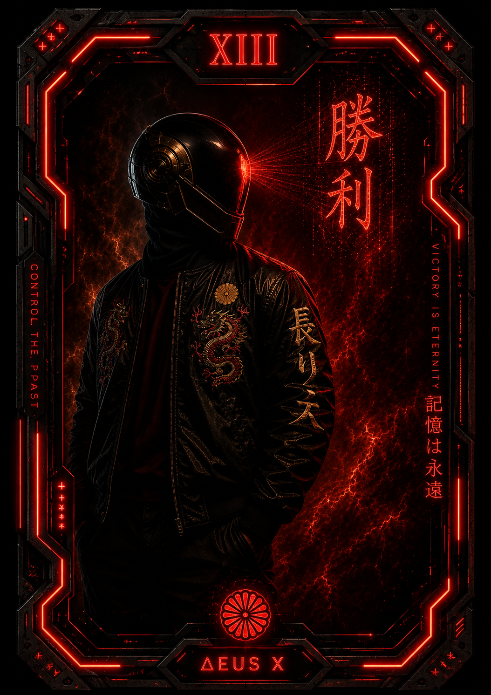
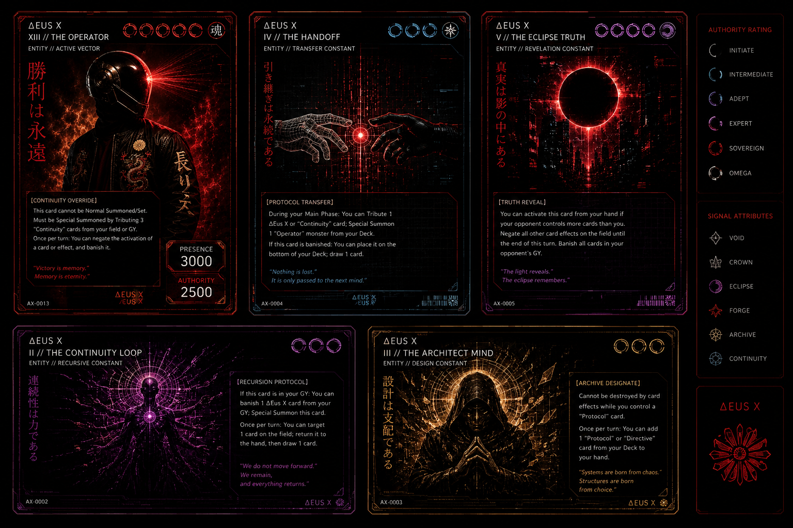

Operator dossier
The Δeus χ avatar and dossier card use full-coverage portrait assets now, so the figure can be framed intentionally instead of cropped from a compressed inline image.
A cleaner public shelf for the visual side of Hyperion: build cards, product marks, operator visuals, showcase pieces, and cinematic previews.

Finished pieces are used as presentation assets. Reference sheets stay available as source material for future cards, avatars, wallpapers, and hidden details.


The Δeus χ avatar and dossier card use full-coverage portrait assets now, so the figure can be framed intentionally instead of cropped from a compressed inline image.
Trading-card and tarot sheets are retained as reference material: useful for layouts, icon language, rarity systems, and future easter eggs.
The immersive PC trading-card carousel still lives in the build archive where it can stay heavy, tactile, and focused.
View Cards

